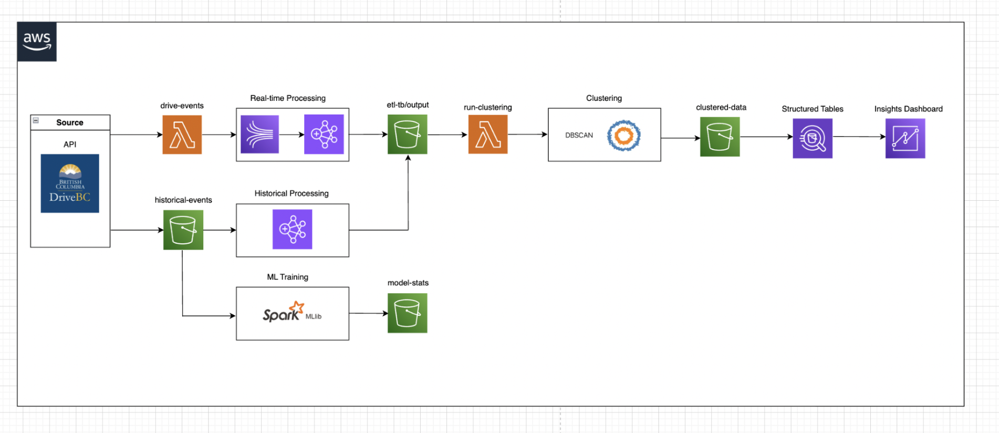

Technical Projects
Reddit Data Engineering Pipeline

Built a comprehensive data pipeline that processes Reddit data using modern data engineering tools and cloud services. The pipeline uses Apache Airflow for orchestration, containerized with Docker for portability, and leverages AWS services for data processing and analytics.
Key Technologies:
- Apache Airflow for workflow orchestration
- PostgreSQL & Celery for task management
- AWS Services (Athena, Redshift, QuickSight)
- Docker for containerization
- Python for ETL processes
Stack Overflow Big Data Analysis


Developed a scalable data analytics pipeline analyzing Stack Overflow's extensive dataset of questions, answers, and tags. The solution processes millions of records using AWS EMR and Spark, storing results in optimized Parquet format for efficient querying through Athena, with interactive visualizations in QuickSight.
Key Features:
- Analysis of tag popularity trends over time
- Power user behavior analysis
- Response speed metrics by technology
- User engagement patterns
- Interactive dashboards with drill-down capabilities
Technologies Used:
- AWS (S3, EMR, Athena, QuickSight)
- Apache Spark & PySpark
- SparkNLP for text analysis
- Matplotlib for data visualization
- Pandas for data manipulation
DriveBC Road Incident Analytics System
A sophisticated big data and machine learning pipeline that processes live road incident data from DriveBC. The system leverages Spark Streaming, AWS services (Kinesis, Lambda, EMR, S3, Athena, QuickSight), and SparkML to predict incident durations and visualize accident risk zones.

Key Technologies & Features
- Apache Spark
- PySpark MLlib
- AWS Kinesis
- AWS Lambda
- AWS EMR
- AWS S3
- AWS Athena
- AWS QuickSight
- DBSCAN Clustering
- Random Forest
- TensorFlow
Key Achievements
580,000+ Incidents
Built an end-to-end data pipeline processing over 16GB of road incident data
Real-time Processing
Implemented streaming data pipeline using Kinesis and Spark Streaming
RMSE 9.55
Developed ML models with high accuracy for incident duration prediction
Interactive Analytics
Created geospatial visualizations using DBSCAN clustering
Production Ready
Deployed fully automated system on AWS infrastructure